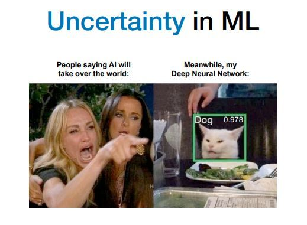

With the impressive performance of deep learning, adoption of such models are massive and dependence on them becomes imperative. This begs the question - how confident are these deep learning models in their predictions / recommendations ? It is clear that the output of these models, without any sense of confidence can quickly be disastrous, depending on the sensitivity and scale of the people impacted. This blog post aims to cover some of these topics - from understanding what it means to predict how confident a model is to other techniques like calibration that is used to tune models to a real-world likelihood.
Uncertainty
The standard view of deep learning models is that their predictions are deterministic i.e. given a model and an input, the prediction is a point estimate that always remains the same (Gal et al. 2016). The certainty about this prediction is surpisingly quite uncommon in standard literature/practice and unavailable in standard SOTA models. But how can this uncertainty help ? Well, it turns out - knowing the uncertainty for any prediction is quite helpful. If the input is out-of-distribution(O.O.D), the model have a high uncertainty output certainly helps identify such inputs and signal that the model is being given something it wasn’t trained to do. Taking a step further, another application of uncertainty includes consulting a human - when a model is unsure about it’s prediction, a rule can certainty be added that defers the prediction to a (expert) human when the model has low confidence or high uncertainty about it’s predictions. There exist many more of these examples, but I hope the importance of uncertainty is well motivated.
Moving on, what are the potential sources for uncertainty?
- Noisy/Stochastic data(imprecise labels, etc.) - practically no control over the data/task
- Unsure about the underlying measurements, inadequate knowledge, etc.
These are broadly the sources of uncertainty. All uncertainty arising from noisy data and the inherent stochasticity of the underlying data/task is termed as Aleatoric Uncertainty and uncertainty arising from imprecise knowledge is termed as Epistemic Uncertainty.
The word epistemic comes from “episteme”, Greek for “knowledge”, i.e. epistemic uncertainty is “knowledge uncertainty”. Aleatoric comes from the Latin “aleator”, or “dice player”, i.e. aleatoric uncertainty is the “dice player’s” uncertainty. Epistemic and aleatoric uncertainties are sometimes referred to as reducible and irreducible uncertainties respectively, since epistemic uncertainty can be reduced with more data (knowledge), while aleatoric uncertainty cannot (the stochasticity of a dice roll cannot be reduced by observing more rolls). We will avoid this terminology though, since aleatoric uncertainty can also be seen as “reducible” through an increase in measurement precision, i.e. by changing the underlying system with which we perform the experiment.
Aleatoric Uncertainty
Aleatoric Uncertainty simply stated is irreducible uncertainty due to the inherent stochasticity. This section covers calculating Aleatoric Uncertainty through Mean Variance Estimation (Nix and Weigend 1994). Given an input \(X\), we’re interested in estimating the (a) conditional mean i.e. \(\mu(y\vert x)\) and (b) uncertainty estimate by calculating the variance \(\sigma^2(x)\). Note, both the mean and variance are dependent on the input. By adding an additional layer(with weights $W_{}) that estimates \(\sigma^2\), \(\sigma^2(x) = W^T * h + \beta\), where \(\beta\) is the bias. In order to make variance positive, an exponential activation is added in the end (Nix and Weigend 1994). Another modern spin on this is using the reparameterization trick (Kingma, Salimans, and Welling 2015) (see the implementation here on Ripple), where a random variable \(\epsilon\) is introduced to enable backpropogating through a random node.
Epistemic Uncertainty
References
Citation
@online{balloli2023,
author = {Vaibhav Balloli},
title = {Uncertainty in {Deep} {Learning}},
date = {2023-06-11},
url = {https://vballoli.github.io/research-recap/posts/uncertainty-deep-learning},
langid = {en}
}